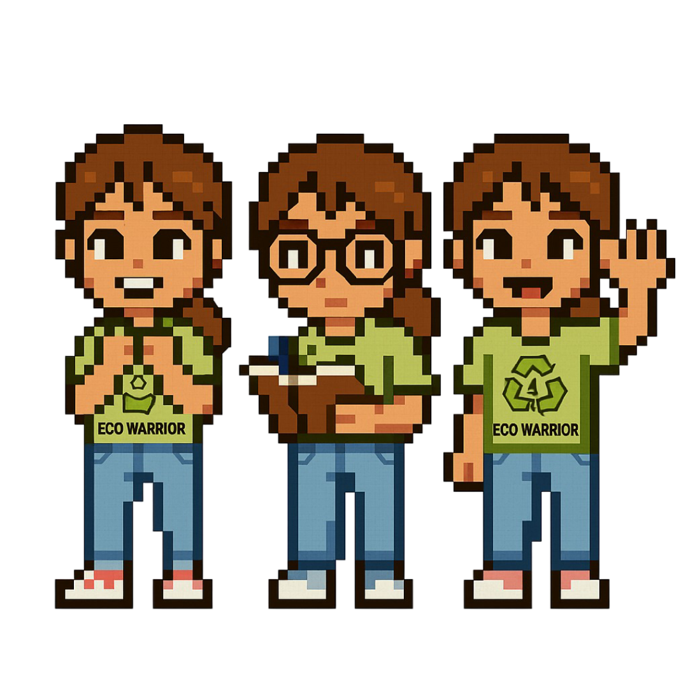
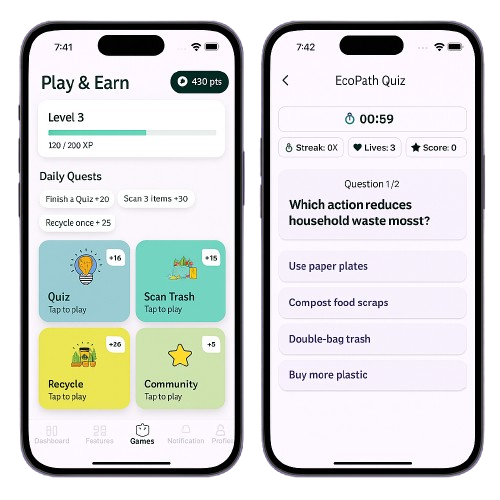

EcoPath helps you visualize and reduce waste, energy, and emissions — empowering cities and individuals to build a sustainable tomorrow.
Explore the App
EcoPath is a smart environmental tracking platform we built to help people and governments monitor and reduce their ecological footprint across 15 South Korean cities. It combines a mobile app for citizens and a web dashboard for municipalities, tracking waste, energy, gas, and water usage with AI-powered trash recognition, interactive maps, and gamified eco-points — making sustainable living data-driven, educational, and rewarding.
Tracks users’ eco-friendly actions like recycling, energy use, and transport choices. Gives insights and suggestions to help them build sustainable daily habits.
Lets users redeem eco-points for green products, services, or discounts — making eco-friendly living more rewarding and accessible.
Encourages users through challenges and quizzes that earn eco-XP, unlocking levels, badges, and achievements along their sustainability journey.

Track recycling progress, earn achievements, and stay connected with your city’s sustainability goals — all through the EcoPath mobile app.